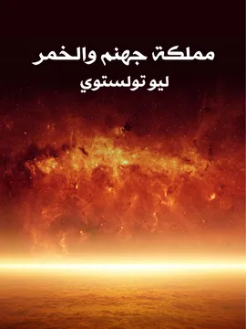

مملكة جهنم والخمر

قراءة عربية أصلية محددة النطاق في الصفحات 11، 12 من ملف PDF المرتبط، وليست تلخيصا كاملا للكتاب. نناقش ما تدعمه هذه المقاطع فقط.
بعلزبول يفزع
يفتتح الفصل «هدم مملكة جهنم وتجديدها» بحكاية: قال الفيلسوف حدث ذلك عندما نشر المسيح تعاليمه بين الناس، تلك التعاليم الواضحة القريبة المنال التي يسهل على كل إنسان فهمها وإدراكها واتباع ما جاء فيها من السنن والشرائع؛ ولا ريب أنها تنقذ الناس التابعين لها من الشر وتخرجهم من ظلمات الآثام إلى النور الذي شعاره المحبة ودثاره الإخاء والمساواة. وقد انتشر ذلك التعليم بسرعة، ولم يقدر أحد أن يقف في وجه انتشاره أو يصد تياره. إن بعلزبول، أبا ورئيس جميع طغمات الشياطين، اضطرب جزعا وارتعشت أعصابه فزعا؛ ذلك لأنه علم حق العلم بأن سلطته على الناس أخذت في التقلص والزوال، وأنها ستتلاشى وتصبح أثرا بعد عين إذا لبث المسيح مواصلا تعاليمه وكرازته. نقل النص إلى العربية سليم قبعني.
زاوية وحدود القراءة
قراءة الصفحتين ١١ و١٢ (مطلع هدم مملكة جهنم)؛ النطاق حكاية الافتتاح فقط.
الطبعة والقراءة
٢٠١٧ جميع حقوق النشر الخاصة بتصميم هذا الكتاب وتصميم الغلاف م ر خصة بموجب رخصة املشاع الإبداعي :ن سب ا ملصن ف ،الإصدار ٤٫٠جميع حقوق النشر الخاصة بنص العمل الأصلي خاضعة للملكية العامة
تنزيل PDF المجاني ↓ القراءة والمصدر الرسمي ↗